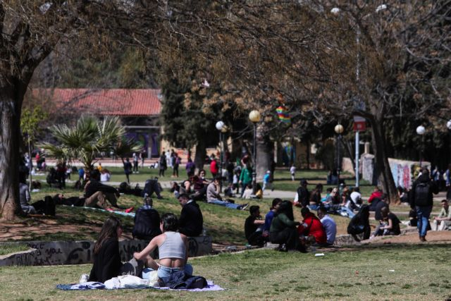
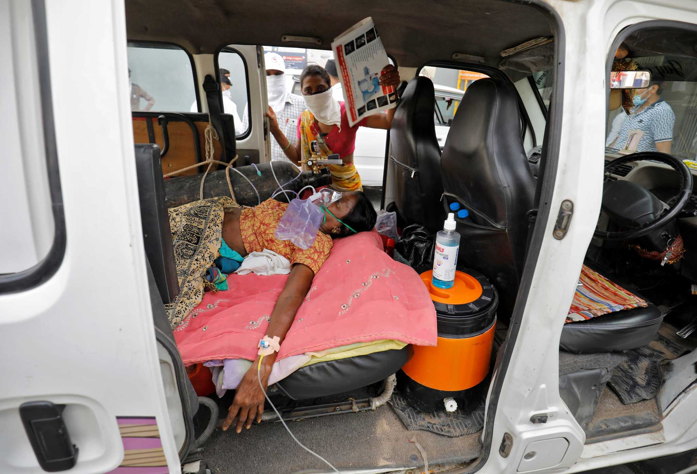
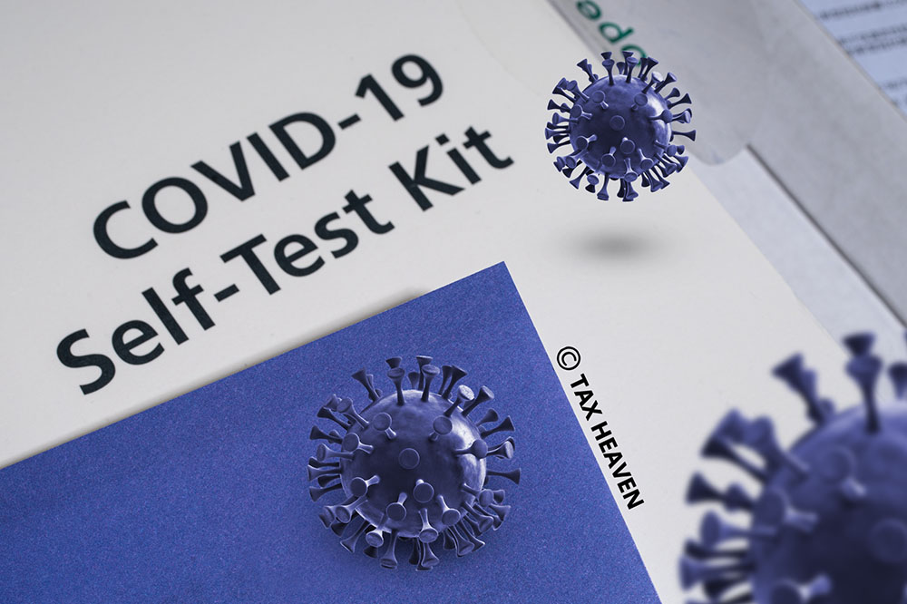
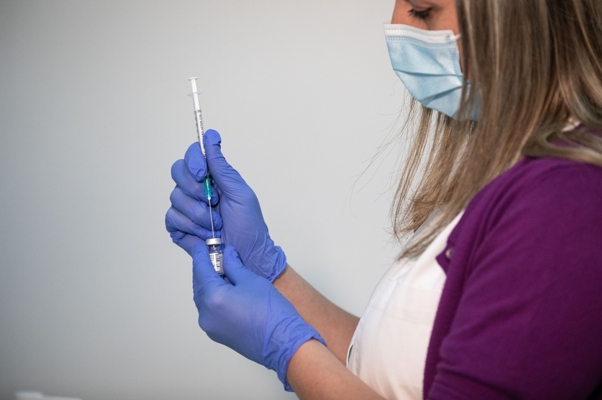

Στο τραπέζι χαλάρωση μέτρων για τους εμβολιασμένους

Η Εβδομάδα των Παθών, ξεκίνησε με την πανδημία στη χώρα να είναι σε κρίσιμο σημείο,
εμφανίζοντας από τη μια περιορισμό κρουσμάτων και νοσηλειών, αλλά υψηλό αριθμό θανάτων
(χθες έσπασε το φράγμα των 10.000 θανάτων στην Ελλάδα), ενώ σε ανησυχητικά υψηλά επίπεδα
παραμένουν οι διασωληνώσεις.
Κυβέρνηση και ειδικοί παρακολουθούν με κομμένη την ανάσα, το σταδιακό άνοιγμα της χώρας,
ειδικά από σήμερα Μεγάλη Δευτέρα, γνωρίζοντας ότι από το βαθμό τήρησης των μέτρων προστασίας
από τον κοροναϊό, θα κριθεί σε ποια επιδημιολογική κατάσταση θα γίνει η άρση του πολύμηνου lockdown,
που έχει προσδιοριστεί στα μέσα Μαίου, με την έλευση των πρώτων τουριστών στη χώρα.
3 ώρες πριν
Ανησυχία για την ινδική μετάλλαξη

Το πρώτο εντοπίστηκε στην Πάτρα και επρόκειτο για άνδρα, ο οποίος δεν είχε ταξιδέψει,
ούτε είχε έρθει σε επαφή με κρούσμα. Το δεύτερο, εντοπίστηκε στο κέντρο της Αθήνας,
σε μία 33χρονη αλλοδαπή, που είχε ταξιδέψει στο Ντουμπάι, είχε επιστρέψει στη χώρα με
αρνητικό τεστ και στη συνέχεια παρουσίασε συμπτώματα.
“Δεν υπάρχουν επαρκή δεδομένα για την νέα παραλλαγή του κορονοϊού,
την ινδική”, υπογράμμισε ο αντιπρύτανης του ΕΚΠΑ, Αθανάσιος Τσακρής,
μιλώντας στο κεντρικό δελτίο ειδήσεων του ΑΝΤ1. Σημείωσε, πάντως,
πως “τα επιδημιολογικά δεδομένα δείχνουν πως η λεγόμενη ινδική μετάλλαξη
είναι πιο μεταδοτική και ενδεχομένως να διαφεύγει από την ανοσία του εμβολιασμού”.
Ωστόσο, διευκρίνισε ότι είναι μικρό το ενδεχόμενο διαφυγής της νέας μετάλλαξης από τα εμβόλια και,
ως εκ τούτου, συνέστησε να προχωρήσει σε παγκόσμιο επίπεδο ο εμβολιασμός.
2 ημέρες πριν
Self Test: Τι ισχύει για Εργαζομένους και Εργοδότες

Κατόπιν πολλών ερωτημάτων που έχουν τεθεί στο Υπ. Εργασίας και Κοινωνικών Υποθέσεων
αναφορικά με την υποχρέωση διενέργειας διαγνωστικού ελέγχου νόσησης από τον κορωνοϊό
COVID-19 για τους εργαζόμενους του ιδιωτικού τομέα,
με τη νέα εγκύκλιο 22963/2021 διευκρινίζονται τα εξής σχετικά με την ΚΥΑ Δ1α/ΓΠ.οικ. 24525/18.4.2021:
Σύμφωνα με το άρθρο 1 της ανωτέρω ΚΥΑ «Οι διατάξεις της παρούσας εφαρμόζονται
για τους εργαζόμενους/ες σε εργοδότες με επιχειρηματική δραστηριότητα α) στο λιανεμπόριο
β) στις μεταφορές γ) στην εστίαση, δ) στις χρηματοπιστωτικές και ασφαλιστικές δραστηριότητες
ε) στις δραστηριότητες καθαρισμού στ) στις υπηρεσίες τυχερών παιχνιδιών και στοιχημάτων
ζ) σε άλλες δραστηριότητες παροχής προσωπικών υπηρεσιών (κομμωτήρια, κουρεία και κέντρα αισθητικής)
και η) στις δραστηριότητες σχολών οδηγών, προκειμένου να παρέχουν την εργασία τους με φυσική παρουσία
στον συμφωνημένο στην ατομική τους σύμβαση τόπο εργασίας σύμφωνα με τους Πίνακες 1 έως και 8 του Παραρτήματος Α
που προσαρτάται στην παρούσα και αποτελεί αναπόσπαστο μέρος της».
1 εβδομάδα πριν
Οι δυνατότητες για όσους έχουν εμβολιαστεί πλήρως

Όταν κάποιος έχει ολοκληρώσει τον εμβολιασμό του τότε από τους
ειδικούς θεωρείται ασφαλές να περπατάει, ή να αθλείται σε εξωτερικό χώρο,
να βρίσκεται σε μικρές μαζώξεις με εμβολιασμένα ή μη άτομα, και να γευματίσει
σε ένα εξωτερικό χώρο χωρίς μάσκα.
Ωστόσο, καλό θα ήταν να συνεχίσει να φοράει μάσκα
Σε εσωτερικούς χώρους δυνητικά θα μπορούσε να παραλειφθεί η χρήση της μάσκας
σε συναθροίσεις με πλήρως εμβολιασμένα άτομα, ή σε αν οι
μη εμβολιασμένοι είναι από μία μόνο οικογένεια σε ομάδες λίγων ατόμων.
Θεωρητικά, οι πλήρως εμβολιασμένοι είναι ασφαλές να ταξιδέψουν εντός των
συνόρων της χώρας, χωρίς να κάνουν τεστ ή να μπουν σε καραντίνα επιστρέφοντας.
Παρόλα αυτά, είναι σημαντικό στα ταξίδια να τηρούνται μέτρα προφύλαξης,
όπως η τήρηση αποστάσεων, η χρήση μάσκας, και η σωστή και συχνή υγιεινή των χεριών.
Όσον αφορά το ταξίδι στο εξωτερικό, ανάλογα με τον προορισμό το άτομο πρέπει να ελέγξει αν απαιτείται
πιστοποιητικό εμβολιασμού ή καραντίνα στην επιστροφή
2 εβδομάδες πριν
SARS-CoV-2 : Πώς χτίζεται η ανοσία;
Η ανοσία (και η διάρκειά της) μετά από νόσηση με τον νέο κορωνοϊό ή
μετά τον εμβολιασμό, αυτή η άγνωστη… Ενα από τα πιο φλέγοντα ερωτήματα
για τους ερευνητές ανά τον κόσμο αυτή τη στιγμή οι οποίοι προσπαθούν
να ρίξουν φως στα μυστικά της ανοσολογικής απόκρισης του ανθρώπινου
οργανισμού στον SARS-CoV-2 ώστε να «φωτίσουν» τελικά και τις ζωές των
ταλανισμένων από την κορωνο-πανδημία δισεκατομμυρίων κατοίκων του πλανήτη.
Στην πρώτη γραμμή της σημαντικής αυτής ερευνητικής «ανοσο-μάχης» βρίσκεται
ο καθηγητής του Τμήματος για τα Εμβόλια και τα Μεταδιδόμενα Νοσήματα στο διάσημο
Κέντρο για την Ερευνα στον Καρκίνο Fred Hutchinson στο Σιάτλ των ΗΠΑ κ. Λεωνίδας Σταματάτος.
2 εβδομάδες πριν